司徒最近打算讓開源掌機都可以支援振動功能，因為這樣可以讓遊戲更加有樂趣，當然搭配的則是Hack NES遊戲，借此讓NES遊戲支援振動功能，而第一台開刀的機器就是RG300，因為RG300是目前司徒拿到最新的開源掌機，當然，司徒也相當感謝揚立銘提供的PCB焊點圖，讓司徒可以快速完成硬體改機
使用的腳位為LCD_SDA(TP148)
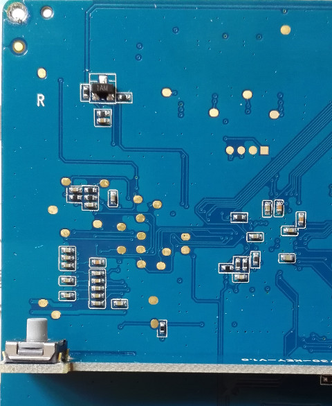
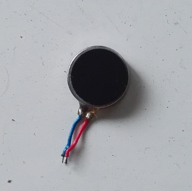
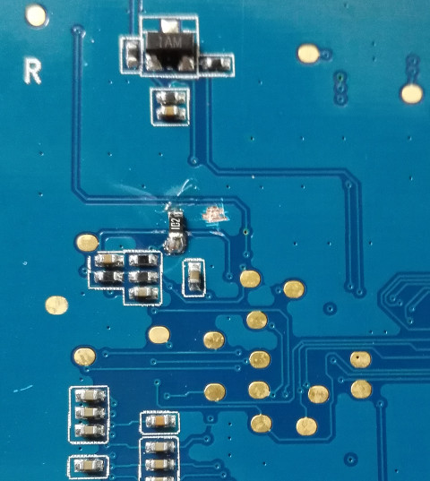
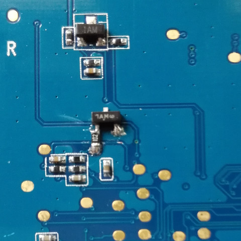
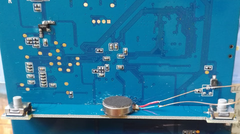
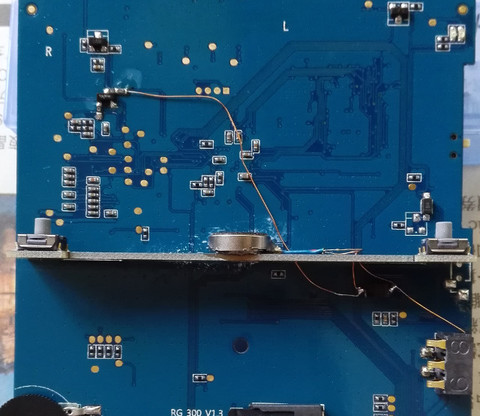
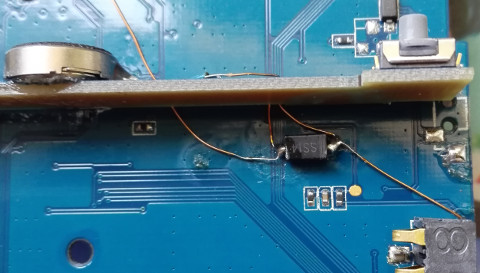
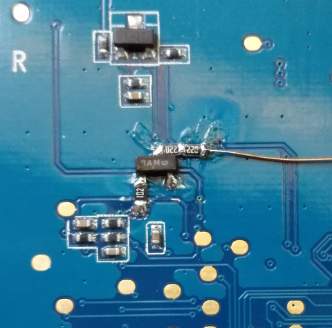
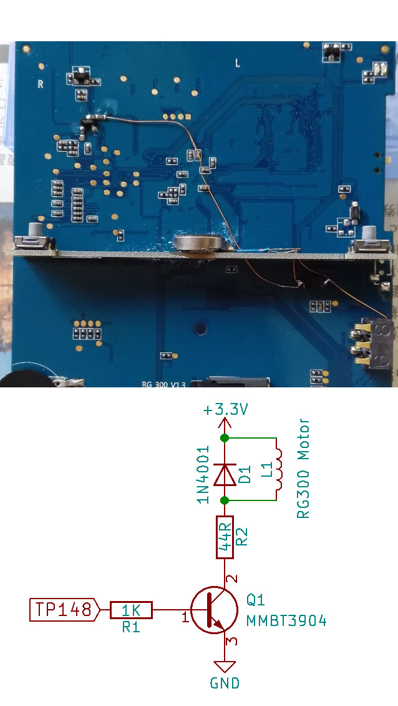
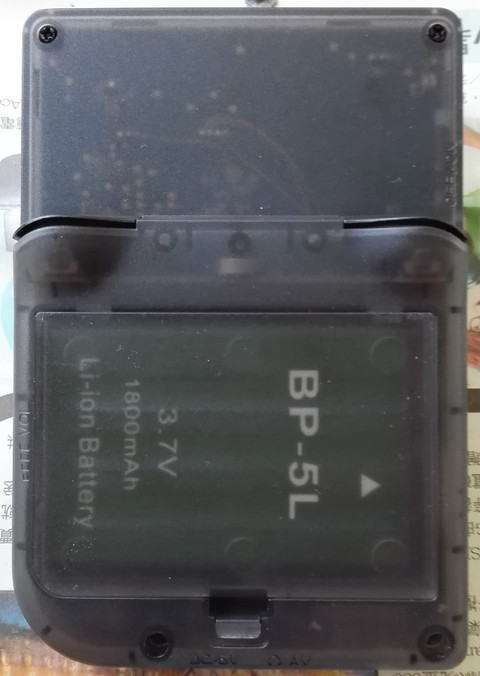
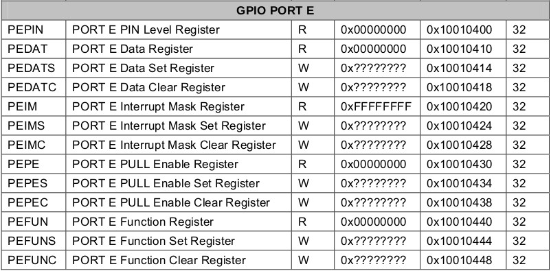
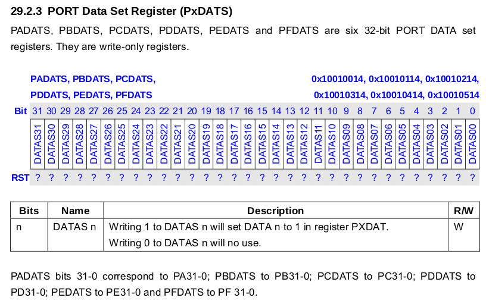
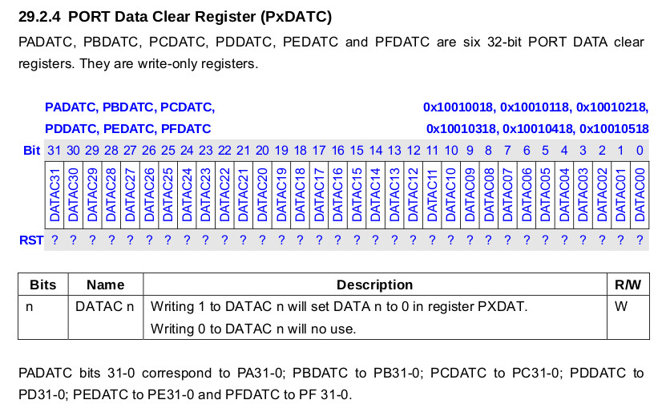
#include <stdio.h>
#include <stdlib.h>
#include <string.h>
#include <fcntl.h>
#include <sys/mman.h>
#include <unistd.h>
#include <time.h>
int main(int argc, char* argv[])
{
int fd = open("/dev/mem", O_RDWR);
if (fd < 0) {
printf("failed to open /dev/mem\n");
return -1;
}
unsigned char *mem = mmap(0, 4096, PROT_READ | PROT_WRITE, MAP_SHARED, fd, 0x10010000);
printf("mem ptr: 0x%x\n", mem);
mem[0x414] |= 4;
usleep(5000000);
mem[0x418] |= 4;
munmap(mem, 4096);
close(fd);
return 0;
}